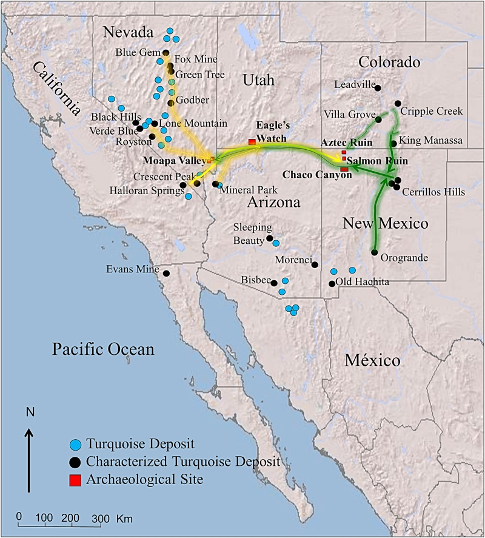
Today’s Agenda
III. Designing an Environmental Policy
- Complications 4: Unequal Voice, Access & Impacts
Justin Leinaweaver (Spring 2024)
Complicating Factors to Consider When Designing Your Policy
Risk aversion (acceptance)
Temporal discounting and uncertainty
Collective action problems and free-riding
Inequality
Greenwashing
Collective Action Problems (I)
Rapid resource depletion when…
Resource use benefits the user, and
The costs of use are shared by all users
Collective Action Problems (I)
Rapid resource depletion when…
Resource use benefits the user, and
The costs of use are shared by all users
Collective Action Problems (II)
Resource degradation when…
Costs imposed on individuals, and
Benefits distributed widely across society
Collective Action Problems (II)
Resource degradation when…
Costs of protection paid by the user, and
Benefits of protection are distributed widely
How do the problematic roots of American environmentalism impact the processes of problem-solving and outcomes we observe today?

Therefore, “[to] create a just and vibrant climate future, we need to … cast Hardin and his flawed metaphor overboard.”
Mildenberger (2019)
Hardin’s argument is massively influential
Hardin gets the history wrong
Hardin gets the science wrong
Hardin gets the morality wrong
Hardin’s argument makes addressing climate change harder
Therefore, “[to] create a just and vibrant climate future, we need to … cast Hardin and his flawed metaphor overboard.”
1) Hardin’s argument is massively influential
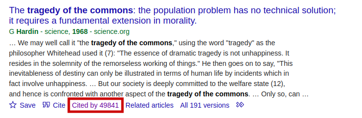
2) Hardin gets the history wrong

The Chaco Anasazi
Why did the Anasazi disappear?
2) Hardin gets the history wrong
3) Hardin gets the science wrong
Hardin’s “Science”:
Human reproduction is a “Tragedy of the Commons”
Reproduction as a Prisoner’s Dilemma
Other Parents |
|||
|---|---|---|---|
| No Kids | Have Kids | ||
| You | No Kids | No pay, no gain | You pay, no gain |
| Have Kids | They pay, you gain | You pay, you gain | |
NOBEL PRIZE WINNER Elinor Ostrom


Lifeboat Ethics
4) Hardin gets the morality wrong
4) Hardin gets the morality wrong
Hardin’s policy argument is for the “rich” world to:
Control the right to reproduction (don’t fill your lifeboat)
Seal our borders against immigration (protect your lifeboat)
Accept human suffering in the poor world as a signal to the poor to push for better governments
5) Hardin makes addressing climate change harder
Mildenberger (2019)
Hardin’s argument is massively influential
Hardin gets the history wrong
Hardin gets the science wrong
Hardin gets the morality wrong
Hardin’s argument makes addressing climate change harder
Therefore, “[to] create a just and vibrant climate future, we need to … cast Hardin and his flawed metaphor overboard.”
Therefore, “American environmentalism’s racist roots have negatively impacted global conservation practices.”
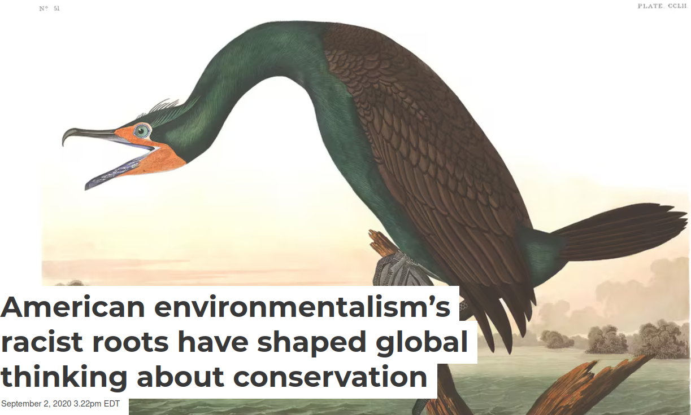

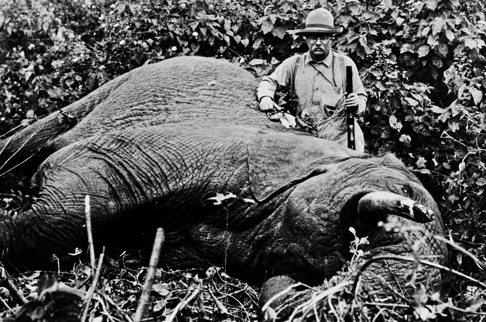
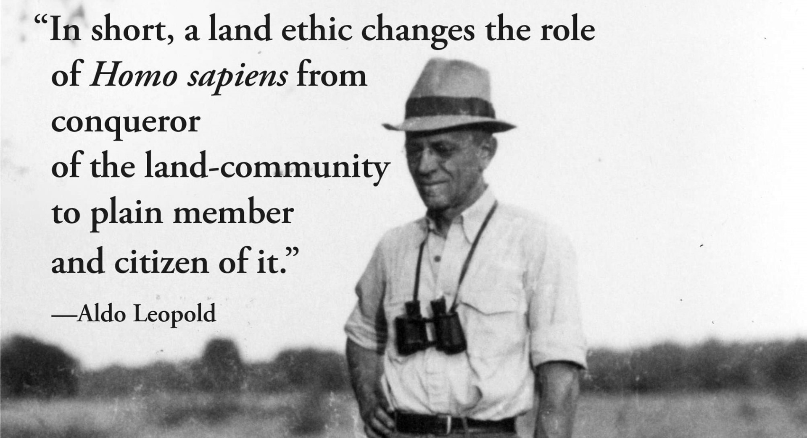
Bullard, Mohai, Saha & Wright (2007)
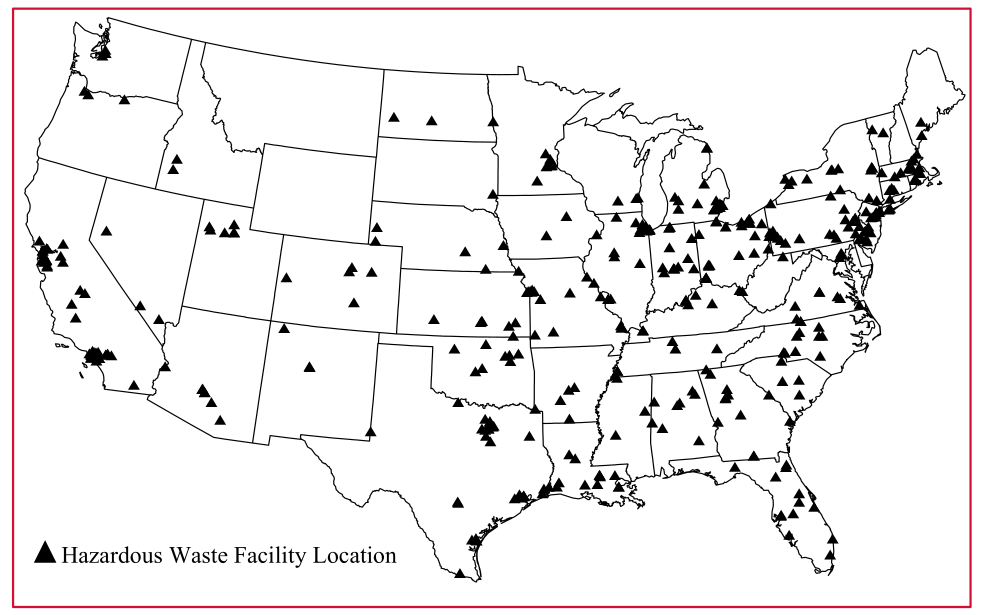
Bullard, Mohai, Saha & Wright (2007)
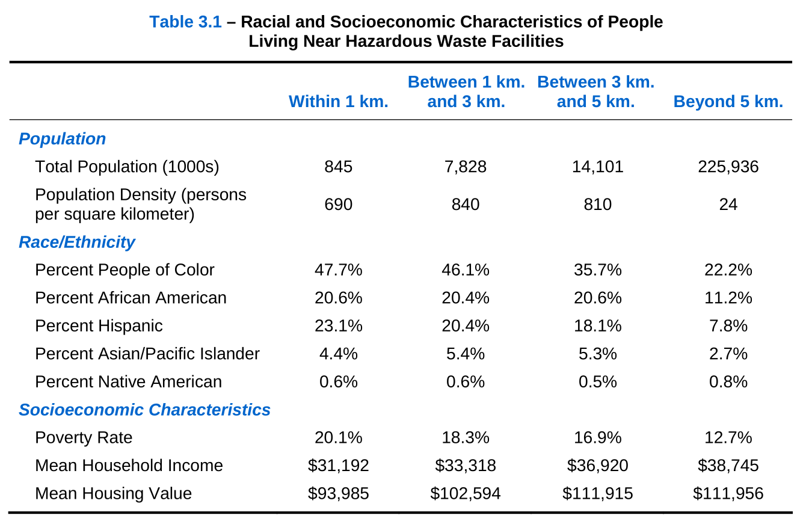
Bullard, Mohai, Saha & Wright (2007)
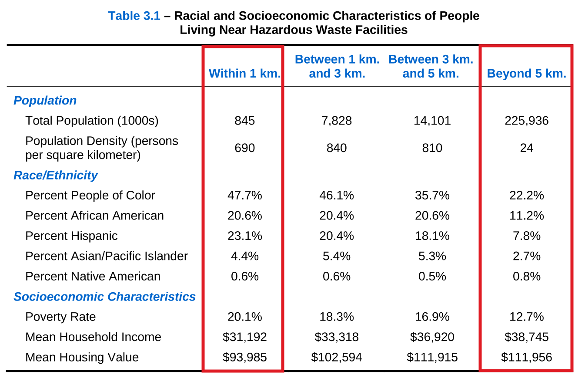
Bullard, Mohai, Saha & Wright (2007)
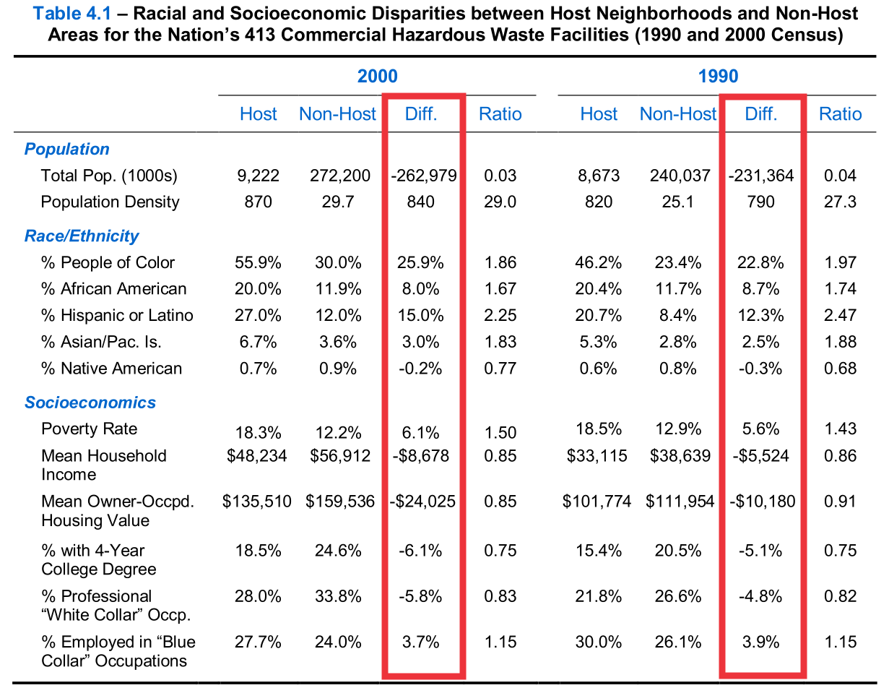
Kerr et al (2024)
Increasing Racial and Ethnic Disparities in Ambient Air Pollution-Attributable Morbidity and Mortality in the United States
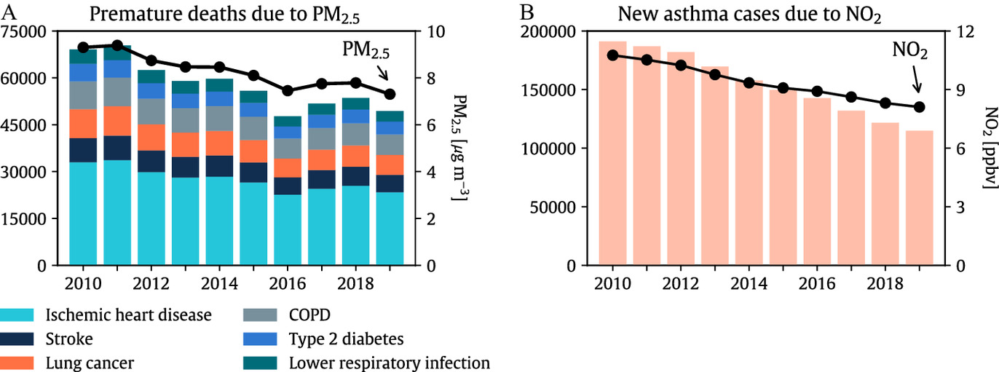
Kerr et al (2024)
Increasing Racial and Ethnic Disparities in Ambient Air Pollution-Attributable Morbidity and Mortality in the United States
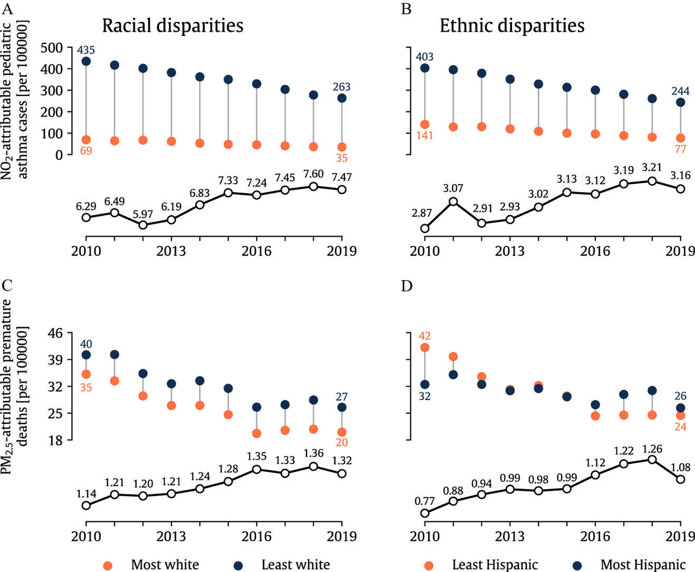
Donoghoe and Perry (2024)
US Civil Rights Tools Are Failing the Most Polluted Black Communities
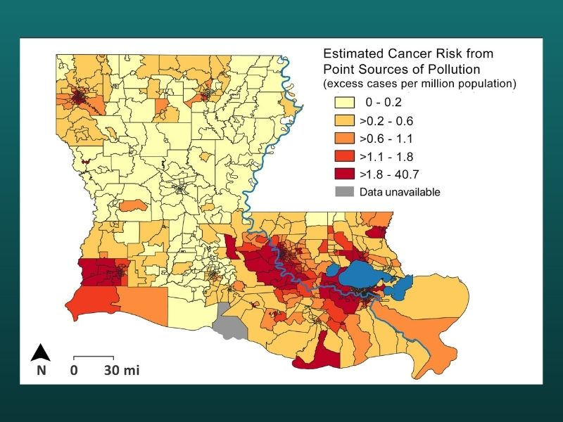

Complicating Factors in Environmental Policy-making
Given the problematic history, the unequal present harms and the political challenges, should environmental justice be a central piece of your problem-framing? Why or why not?
For Next Class
Fusion Day Prep
- Prepare an “elevator pitch” for your project